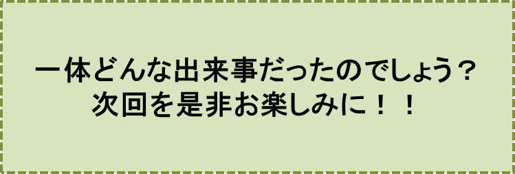

との掲示をしてくれるよう依頼したのです。
私が投函した全ての佐田君宛郵便物、内容証明付き手紙も、一緒に展示されました。
8月16日に、必ず雨をもたらすということを、2週間も前から明確に予言をしていたという驚くべき事実。このことの動かぬ証拠として、手紙類も展示されたわけです。
オリジナルでは、通りからは小さくて、とても見えないということで、畳一枚ぐらいの大きさに拡大された手紙が、人目に付くよう展示されました。
早速、この掲示を見た幾つかの新聞社が、朝の新聞で、このことを大々的に報道しました。ある新聞社は、天田さんを“希代の雨男”と呼び、他の新聞社は“八大竜王”の有能な弟子と位置づけましたので、この新聞記事やテレビニュースに接した人達が、珍しいもの見たさに、銀座通りに押し寄せてきたのです。
パレードは予定通り、定刻、午後１時に始まりました。
人々は降りしきる雨の中、“万歳！万歳！”と叫び、“雨”、“雨男”などと大きく描いた手作りの旗を盛んに振り回しました。
私も佐田君も、天に向って、大きく両手をひろげて、喜びを全身であらわしたり、雨の中、私達を歓迎してくれている沿道の人達に、感謝の気持で思い切り手を振り、頭を何度も下げました。
人々がこんなに喜んでくれるのも無理はありません。私達が東京に着いたその日の晩、つまり昨晩には、蛇口から、普段通りに、水が勢いよく出てきて、何十日振りかに、バスタブを満杯にしたお風呂を、心ゆくまで楽しんだわけですから。
天田さんも端正な無表情の顔に僅かな笑みを浮かべて、人々に右手を大きく振り、歓呼の声に応えていました。
人々が、この大雨を全身で感じたいと、傘を自宅に置いたままにしているのに、どうしたことでしょう。天田さんだけはあの大きな傘を目一杯に広げて、雨に濡れるのを避けています。
こんな楽しいパレードの後でも、あぁ、夕食、朝食、昼食、三度の食事は、東京到着以来、全く変わらない内容で、野菜サンド、ミックスサンド、そしてコップのお水でした。
母手作りの温かい食事は勿論のこと、予備校食堂の天ぷらドンブリ、親子ドンブリ、カレーライスなどまで、もはや手の届かない夢の世界での食事であったのだと、私は、心の中に思い出しながら、サンドイッチを口にしました。
アルバイト、お手伝いという形ではありましたけれど、佐田君は、東京都に少しは役立つ仕事をしているということで、すっかり、東京都庁の人になりきっていたのでしょう。東京駅での再会以来、ずっと私達と一緒に行動し、気を配ってくれました。
サンドイッチをおいしそうにほおばりながら、佐田君は、高校時代の思い出を熱っぽく語り続けました。もうすっかり、友情も復活した印象です。
天田さんが、私達の会話に入ってくることは、一度もありませんでした。全くのワンパターンです。時折、サンドイッチを口にしましたけれど、右手は常にコップに向っています。
三日目の午後も、パレードが用意されていましたが、昨日に比べ数倍もの人が押し寄せることが予想されたため、コースを長めに変更し、
日本橋→皇居前広場→増上寺→浜離宮
というコースが設定されました。
“稀代の雨男”、“八大竜王”の有能な弟子をぜひ見たいということで、パレードの1時間前、正午ごろには、人、人、人で、沿道は身動きできないほどになってしまいました。
私達三人は、すっかり著名人になったのです！
人々は、傘をかざして立っている天田さんのスケッチがあって、達筆な字で、“雨男！”と記された旗を手にして、盛んに振り回していました。どこかの篤志家が、大量に旗を準備して、沿道の人たちに配ったとのことでした。
三日間、関東全域に休みなく振り続けた雨は、千ミリ近くに達しました。枯渇寸前の野山には、たっぷり、水がもたらされました。各地のダムや貯水池は溢れんばかりの水で満杯となり、草木の緑が見事に甦りました。
雨は、もう十分に降ったというように、パレードのコースの空模様は、霧雨となり、ほんの少しですが、青空すら見え始めたのです。
まさに、その瞬間だったでしょう。大空に虹がかかりました。大雨のフィナーレを飾るにふさわしい見事な虹が、ビルと沿道の樹々をつなぐように、大きく広がりました。
赤、燈、黄、緑、青、蘭、紫、一つ一つが鮮やかな光彩を放ち、人々の目を大空に導きました。
人々は、オープンカーが目の前を通るのも忘れて、空を見上げ、虹に向って、手にしている旗を思い切り振りまわしました。
広々とした皇居前広場、首都のメインストリートにふさわしい、堂々たる日比谷通り、600年有余の歴史を有し、人々に深い信仰を与えてきた浄土宗大本山、増上寺、樹々の緑に囲まれ、沢山の鳥たちが飛び交う浜離宮、見るものすべてが新鮮で、私は大きな感動を覚えました。
パレードの空は思い出したように降りそそぐ雨、そして突如大空にあらわれ、息を飲むほどに美しく輝く大輪の虹、この繰り返しでした。
水不足を見事に解決した三日間の大雨。今、見上げれば、霧雨を伴いつつ大空にひろがる虹。そのフィナーレを飾るものに違いありません。
天の神は、やはり、私達の側にあったのだと、私は、手を合わせて空を見上げました。
楽しくそして心に残ったパレードの後も、私達を待っていた夕食は、いつもの通り、大きな皿に山積みされた野菜サンドとミックスサンド、テーブル一杯に拡がるコップのお水達でした。
翌日、朝早く、私達は東京を発ちました。佐田君一人が見送ってくれました。
―――― ・ ―――― ・ ―――― ・ ――――
やがて、1年が経ちました。浪人生活二年目に入ったということ以外、私は、全く同じような状況の中にありました。私だけではなく、天気もまた、昨年の天気を正確にコピーしているかのように、同じ状況でした。
取水制限、時間給水、ミネラルウォータ類の買い占めなどなども、全て昨年のそれらが、ビデオで再生されるかのように、眼前に繰り広げられました。
去年通りに展開された今夏の風景は、それだけではありませんでした。
8月3日に受け取った古い官製はがきの手紙に始まり、5日午後2時、レインボーでの天田さんとの再会、この再会に合わせるように、突如襲ってきたすさまじい雷雨、稲妻。全て去年の通りです。
その後の手紙書き、今年も、念には念を入れてということで、10日頃から始まった内容証明付きの封書、8月16日「のぞみ306号」に乗って上京する、という内容の手紙に至るまで、まるで、去年通りのシナリオでつくられた映画を見るように、目の前に繰り広げられました。
唯一の違いは、私の手紙に対し、佐田君からは“大歓迎したい”との返信が、連日とどいたこと、そして8月16日、「のぞみ306号」に乗車して、午前10時56分に東京駅に到着することを、昨夏の手紙に比べて非常に短く、たった一行で伝えたことでしょう。
8月16日、私達は「のぞみ306号」に乗りました。まるで予定通りというように、定刻10時前から、すさまじい雷雨の開始です！
この雷雨にさそわれるように、東京駅プラットホームに、沢山の人が押し寄せていました。
大きな雨傘をかざした天田さんの姿がスケッチされ、大きく“雨男”！という文字が、達筆に記されている去年の旗を、ホーム一杯あふれんばかりの人達が、手に手にして、嵐のような拍手で、私達二人を迎えてくれました。
JR東日本も、不便極まりない水不足を、今年も、ものの見事に解決してくれた天田さんを、最大限に歓迎したかったのでしょう。赤いじゅうたんの道を、プラットホーム、階段、通路、そしてタクシー乗り場まで、手早く引いてくれました。
人々の歓呼の声に迎えられた私達は、赤いじゅうたんの道を歩み、まるでヒーローになったかのように手を振って応え、温かい出迎えを感謝して、何度も頭を下げながら歩みました。
私達を待っていた昼食の場所は、このホテル最高級の個室食堂でした。時代物と思われる豪華な木製のテーブルが中央に置かれており、その周りにある数々の備品、絵画、彫刻に、目を奪われました。
……しかし、テーブルの上にあるのは、やはり大きな皿に山積みされた二種類のサンドイッチと、水をなみなみといれた小さな無数のコップ達だけでした。
昼食後、天田さんは旅の疲れが出たのでしょう。早速、ロビーのソファーに身を沈め、すやすやと気持ちよさそうに寝息をたて始めました。
私達は、ホテルの外に出て、雨空を眺めることにしました。
この姿にホテルの人達が気が付いてくれたのでしょう。VIP客室から持ち出したと思われるロッキング・チェアを、用意してくれました。
東京の水不足を、もうほとんど解決してくれたのではないかとさえ思われる雨は、次第に激しい雷雨へと変身していきました。大自然の威力を見よとばかりに、もの凄い暗雲を伴い、耳をつんざく豪音をバックにして、目もくらむ閃光を放ちつつ、稲妻が天空を駆け回ります。
この世の終わりかと思われるような光景！こんなシーンを身動（みじろ）ぎもせず眺めていました。
延々と続く、凄（すさ）まじい雷雨を、時間の経つのも忘れて眺めていた私達を、支配人が、
“夕食の準備が出来ましたよ”
と声をかけてくれ、テーブルに案内してくれました。
二日目、午後のパレードのコースは、昨年と全く同じコースでしたが、今年は色々の点で工夫がされていました。
銀座通りでは、小中学生が大雨の中を、まるでシャワーを楽しむかのように、水泳着姿で私達のパレードに加わり、元気いっぱいに、威勢のよい『東京行進曲』を演奏してくれましたので、パレードは、一層盛り上がりました。
勿論、造花でしたけれど、色とりどりのアジサイ、雨降りにふさわしい、梅雨の花アジサイが、オープンカーめがけてソフトボールの球(たま)のように飛んできました。
“有難う！”
“有難う！”
私も佐田君もそう叫びながら、アジサイの花をキャッチし、オープンカー、に山のように積み上げました。
三日目のパレードも昨年と同じコースで、日本橋をスタートし、皇居前、日比谷通り、そして増上寺の前を通って、浜離宮にゴールインするコースでした。
コースは、昨年と同じでしたけれど、要所要所で、歓迎イベントが企画されており、私達は、そのイベントを沿道の人達とともに楽しみながら、オープンカーをゆっくり走らせました。昨年よりも、2倍も3倍も大きな喜びを味わいました。
昨夏の食事と大きく変わっていたのは二日目、三日目の夕食です。
まさに大変化でした。水不足を完全に解消してくれる“希代の雨男”、“八大竜王”の弟子、に感動したのでしょう。ある篤志家が、都内の最高級ホテルで、立食パーティを企画してくれました。
私は、山海の珍味を好きなだけ口にしました。
パーティを盛り上げるため、ボランティア的に参加してくれた、プロ、アマの合唱団、弦楽四重奏団、ピアニスト、各種バンドの人達との歓談を楽しみ、彼らが演奏する音楽に、耳を傾けました。
パーティには、昨夏そして今年の大雨に感動した、水道関係、料理関係、農業関係などなどの人達が、東京都内からだけでなく、広く関東一円から、交通費、宿泊費ほかの多額の出費をいとわず、馳せ参じてくれました。
驚いたことに、たまたま、関東、東北地方をまわり、深刻な水不足を肌で強く感じていたヨーロッパの名門オーケストラのメンバーの何人かが、多忙な演奏旅行の中で急遽ボランティアベースで、会場に馳せ参じてくれました。これは全く夢の中のことかと思いました。
厚意に溢れたミニ・オーケストラで演奏してくれた曲目は、天田さんが大好きという、ラフマニノフの
『ピアノコンチェルト 第2番』
でした。天田さんは、この曲が余程好きなのでしょう。最前列で水を飲むことすら忘れて、耳を傾けていました。
アンコールはこれも天田さんの大好きな、リストの
『愛の夢』
でした。
楽しく、有意義であった三日間の思い出を胸にして、私達は、翌日の朝早く、東京を発ちました。
昨夏通り、佐田君がプラットホーム迄来てくれて、私達二人を見送ってくれました。
―――― ・ ―――― ・ ―――― ・ ――――
……実は、皆さんに、もっと早くに報告すべきことだったのですが、昨年の上京直前の状況と、今年の東京訪問前の状況との間には大きな差、考えようによっては非常に大きく、そして深刻な差がありました。
それは、私達が上京する日の一週間前ぐらいから始まった出来事でした。
マスコミの連日の報道に、人々が、かたずを飲んで見守っていた出来事です。私は、このことをもっと早く、皆様にお話すべきでした……。
♪♪♪♪コーヒーブレイク♪♪♪♪
